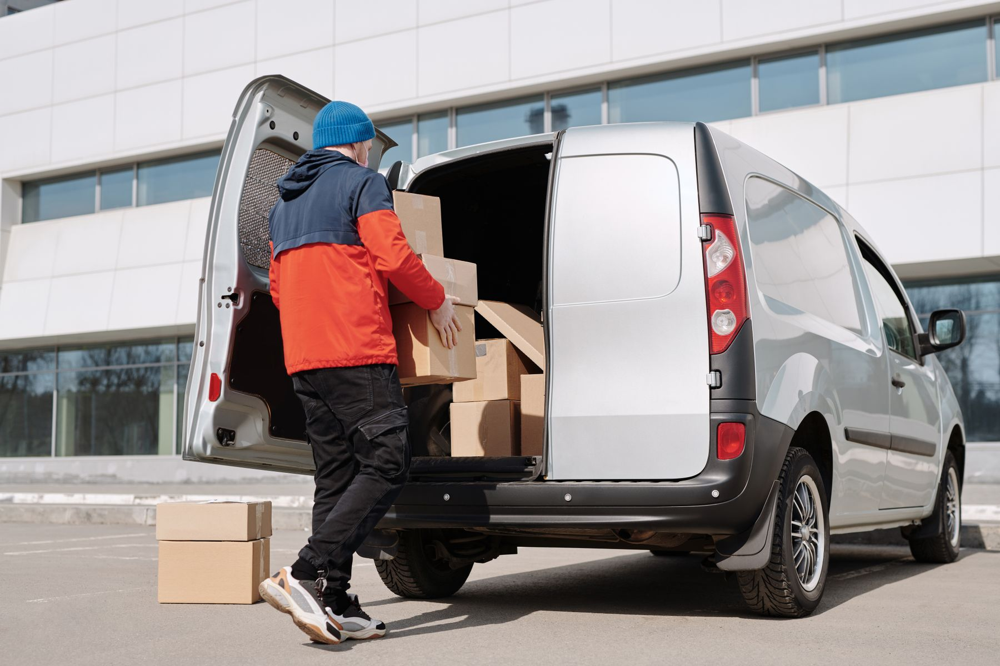
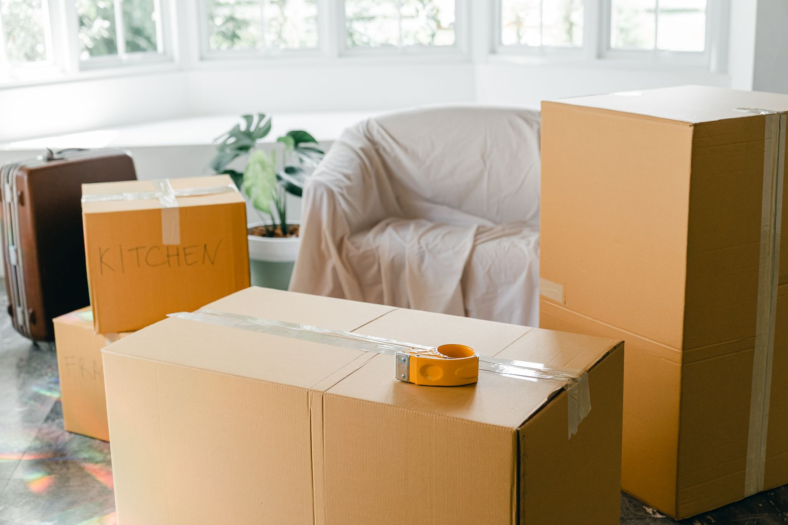
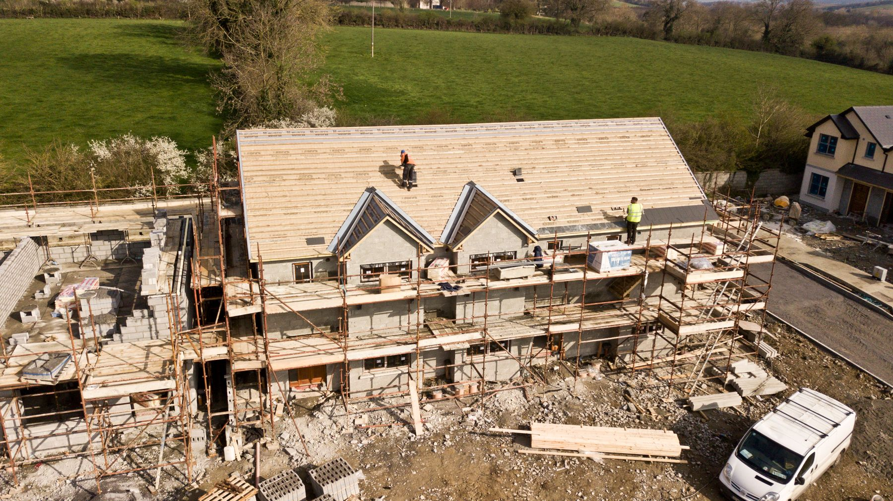
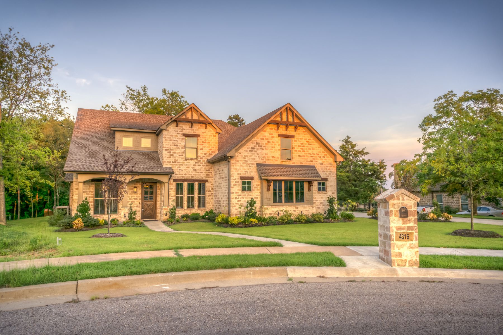
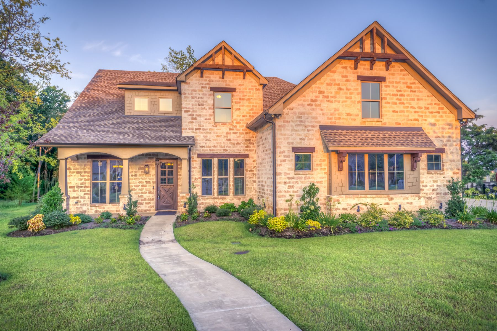

North Central West Virginia
Need a garage cleared, a couch hauled off, or leftover remodel debris picked up? Request a quote and a local crew will follow up.
Services
Move-outs, garage cleanouts, and leftover remodel piles are common calls in this area. Tell the crew what needs to go, where it is sitting, and they can talk through the next step.

General pickup for household junk, garage piles, and mixed loads that need to leave the property.
Junk hauling detailsPickup for couches, mattresses, dressers, and other bulky pieces that will not fit in a regular trash can.
Furniture removal details
Whole-house or multi-room cleanouts after a move, a sale, or the need to clear a property on a deadline.
Estate cleanout details
Pickup for leftover lumber, drywall, shingles, and other remodel or tear-out material that needs to leave the site.
Construction debris detailsHow a quote works
01
Call or send the form. Your town, what needs to go, and a short description of where it is sitting is enough to get started.
02
A local crew follows up, confirms the load, and gives you a price before they start hauling. Ask about licensing and insurance on that call.
03
Once you approve the plan, the crew comes out, loads the items, and leaves the area clearer than they found it.
Service area
Those three towns are the focus, with nearby communities in Monongalia, Marion, and Harrison Counties included.

Junk removal for Morgantown, Westover, Star City, Granville, and Cheat Lake.
Morgantown junk removal
Junk removal for Fairmont, Pleasant Valley, White Hall, and the rest of Marion County.
Fairmont junk removal
Junk removal for Bridgeport, Clarksburg, Shinnston, and nearby Harrison County towns.
Bridgeport junk removalQuestions
Free quote
Share a few details and a local crew can follow up. If the pile is blocking a driveway or a cleanout has a deadline, say so in the message or call.
FORM_ENDPOINT_PLACEHOLDER needs to be replaced when a renter is assigned.